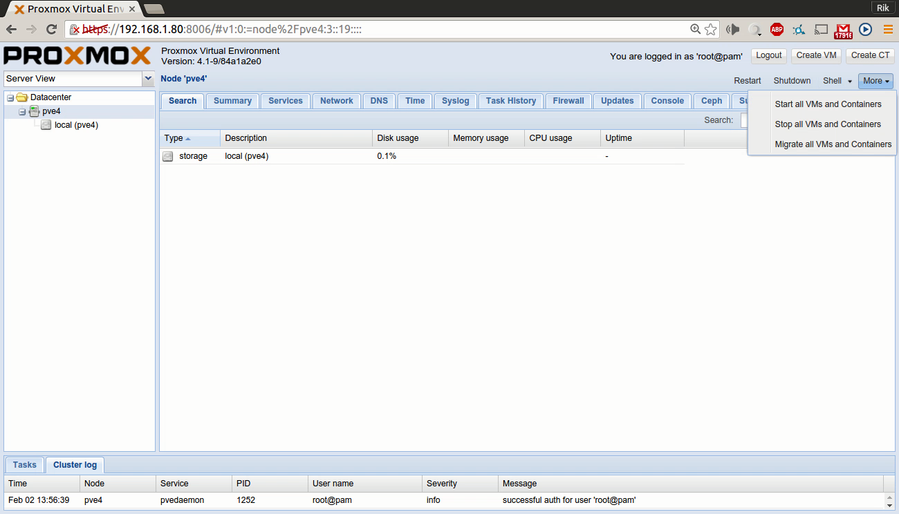

<map name="map">
<!-- #$-:Image map file created by GIMP Image Map plug-in -->
<!-- #$-:GIMP Image Map plug-in by Maurits Rijk -->
<!-- #$-:Please do not edit lines starting with "#$" -->
<!-- #$VERSION:2.3 -->
<!-- #$AUTHOR:rik -->
<area shape="rect" coords="6,149,221,174" alt="Node View" onmouseover="Node" href="node.html" />
<area shape="rect" coords="1,101,227,124" alt="Select View" onmouseover="Select View" href="serverview.html" />
<area shape="rect" coords="299,135,375,156" alt="Summary (Node)" onmouseover="Summary (node)" href="nodesummary.html" />
<area shape="rect" coords="377,135,448,156" alt="Services" onmouseover="Services" href="nodeservices.html" />
<area shape="rect" coords="452,134,522,157" onmouseover="Node Network Settings" />
<area shape="rect" coords="1056,106,1106,128" onmouseover="Restarts the server" href="node.html" />
<area shape="rect" coords="1114,107,1177,126" onmouseover="Shutdown the server" href="node.html" />
<area shape="rect" coords="1141,68,1215,93" onmouseover="Create new virtual machine" href="createvm.html" />
<area shape="rect" coords="1219,70,1295,89" onmouseover="Create container from template" href="createct.html" />
<area shape="rect" coords="1183,108,1238,125" onmouseover="Open node shell" href="nodeshell.html" />
<area shape="rect" coords="1245,108,1291,126" href="nodeservices.html" />
<area shape="rect" coords="49,174,173,191" onmouseover="Local storage" href="local.html" />
</map>
